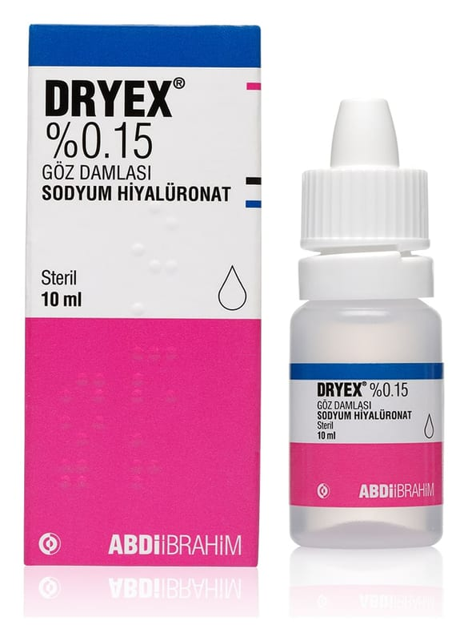

Dryex %0,15 Tek Dozluk Göz Damlası, Çözelti (20 adet)

Ne için kullanılır
KT · Bölüm 1DRYEX, her birinde 0,3 ml’lik göz damlası içeren, 20 adet düşük yoğunluklu polietilen tek dozluk kaplarda, 5’er adet halinde alüminyum folyo zarf içinde karton kutuda kullanıma hazır göz damlasıdır.
DRYEX, kuru göz hastalığının belirtilerinin giderilmesinde kullanılır.
DRYEX, biyoteknolojik işlemle elde edilen saf, doğal bir molekül olan sodyum hiyalüronat bazlı yapay gözyaşıdır. Sodyum hiyalüronat akmaya dirençli yapısı sayesinde göz yüzeyini korur ve gözyaşı tabakasını stabilize eder.